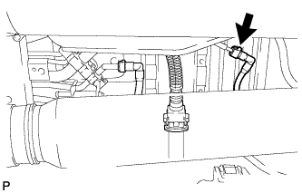
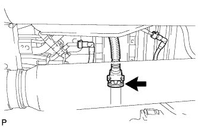
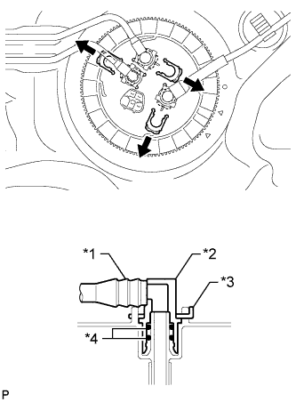

ТОПЛИВНЫЙ БАК (для 5-дверных моделей) > СНЯТИЕ |
| 1. СБРОСЬТЕ ДАВЛЕНИЕ В ТОПЛИВНОЙ СИСТЕМЕ |
Сбросьте давление в топливной системе (Нажмите здесь).
| 2. ОТСОЕДИНИТЕ ПРОВОД ОТ ОТРИЦАТЕЛЬНОГО ВЫВОДА АККУМУЛЯТОРНОЙ БАТАРЕИ |
| 3. СНИМИТЕ ЛЕВОЕ ЗАДНЕЕ СИДЕНЬЕ В СБОРЕ |
для сидений раздельного типа 60/40 с двойным складыванием с левой стороны:
Снимите левое заднее сиденье в сборе (Нажмите здесь).
Для выдвижного раздельного сиденья 60/40 с функцией облегчения посадки с левой стороны:
Снимите левое заднее сиденье в сборе (Нажмите здесь).
| 4. СНИМИТЕ КРЫШКУ ТЕХНОЛОГИЧЕСКОГО ОТВЕРСТИЯ ЗАДНЕГО ПОЛА |
Выверните 3 винта и снимите крышку технологического отверстия заднего пола.
Отсоедините топливный насос и разъем датчика уровня топлива.
| *A | Для моделей с одиночным баком |
| *B | Для моделей с двойным баком |
| 5. СНИМИТЕ ЗАЩИТУ ТОПЛИВНОГО БАКА № 1 В СБОРЕ |
 |
Выверните 6 болта и снимите защиту топливного бака № 1.
| 6. ОТСОЕДИНИТЕ ПОДАЮЩИЙ ТОПЛИВОПРОВОД В СБОРЕ |
 |
Отсоедините подающий топливопровод (Нажмите здесь).
| 7. СЛЕЙТЕ ТОПЛИВО |
Подсоедините портативный диагностический прибор к DLC3.
Установите замок зажигания в положение ON (ВКЛ).
Включите портативный диагностический прибор.
Войдите в следующие меню: Powertrain / Engine and ECT / Active Test / Control the Fuel Pump/Speed.
Включите топливный насос и слейте топливо из подающего топливопровода.
| 8. ОТСОЕДИНИТЕ ВОЗВРАТНЫЙ ТОПЛИВОПРОВОД В СБОРЕ |
Отсоедините возвратный топливопровод (Нажмите здесь).
| 9. ОТСОЕДИНИТЕ ТРУБОПРОВОД ОТСЕЧКИ ТОПЛИВА (для моделей с одиночным топливным баком) |
 |
Отсоедините трубопровод отсечки топлива (Нажмите здесь).
| 10. ОТСОЕДИНИТЕ ТРУБОПРОВОД ОТСЕЧКИ ТОПЛИВА (для моделей с двойным топливным баком) |
|  |
Отсоедините трубопровод отсечки топлива (Нажмите здесь).
| 11. ОТСОЕДИНИТЕ ТРУБКУ САПУНА ТОПЛИВНОГО БАКА В СБОРЕ (для моделей с одиночным топливным баком) |
 |
Отсоедините трубку сапуна топливного бака (Нажмите здесь).
| 12. ОТСОЕДИНИТЕ ТРУБКУ САПУНА ТОПЛИВНОГО БАКА В СБОРЕ (для моделей с двойным топливным баком) |
|  |
Отсоедините трубку сапуна топливного бака (Нажмите здесь).
| 13. ОТСОЕДИНИТЕ ПОДАЮЩИЙ ТОПЛИВОПРОВОД № 2 В СБОРЕ (для моделей с двойным топливным баком) |
Отсоедините подающий топливопровод № 2 (Нажмите здесь).
| 14. ОТСОЕДИНИТЕ ШЛАНГ, СОЕДИНЯЮЩИЙ ТОПЛИВНЫЙ БАК И НАЛИВНУЮ ТРУБУ |
 |
Отсоедините шланг, соединяющий топливный бак и наливную трубу, от наливной трубы топливного бака.
| 15. СНИМИТЕ ТОПЛИВНЫЙ БАК В СБОРЕ |
Установите под топливным баком телескопический гидравлический домкрат.
 |
Выверните 2 болта и снимите 2 фиксатора, 2 штифта и 2 хомута крепления топливного бака.
Медленно приопустите телескопический гидравлический домкрат.
| 16. СНИМИТЕ АМОРТИЗАТОР ТОПЛИВНОГО БАКА |
Снимите амортизаторы топливного бака № 1, № 2 и № 3 с топливного бака.
| *1 | Амортизатор топливного бака № 1 |
| *2 | Амортизатор топливного бака № 2 |
| *3 | Амортизатор топливного бака № 3 |
| 17. СНИМИТЕ ПОДАЮЩИЙ ТОПЛИВОПРОВОД И ВОЗВРАТНЫЙ ТРУБОПРОВОД ТОПЛИВНОГО БАКА В СБОРЕ (для моделей с одиночным топливным баком) |
 |
Снимите 2 фиксатора соединителя топливопровода и вытяните подающий топливопровод и возвратный топливопровод.
| *1 | Топливопровод |
| *2 | Соединитель топливопровода |
| *3 | Фиксатор соединителя топливопроводов |
| *4 | Кольцевое уплотнение |
Снимите подающий топливопровод и возвратный топливопровод с топливного бака.
| 18. СНИМИТЕ ПОДАЮЩИЙ ТОПЛИВОПРОВОД, ВОЗВРАТНЫЙ ТОПЛИВОПРОВОД И ПОДАЮЩИЙ ТОПЛИВОПРОВОД № 2 (для моделей с двойным топливным баком) |
|  |
Снимите 3 фиксатора соединителя топливопровода и вытяните подающий топливопровод, возвратный топливопровод и подающий топливопровод № 2.
| *1 | Топливопровод |
| *2 | Соединитель топливопровода |
| *3 | Фиксатор соединителя топливопроводов |
| *4 | Кольцевое уплотнение |
Отсоедините зажим и снимите подающий топливопровод № 2 с топливного бака.
Снимите подающий топливопровод и возвратный топливопровод с топливного бака.
| 19. СНИМИТЕ ТОПЛИВОЗАБОРНИК С БЕНЗОНАСОСОМ И ДАТЧИКОМ УРОВНЯ ТОПЛИВА В СБОРЕ |
 |
Установите SST на крепежную деталь датчика топливного насоса.
Ослабьте крепежную деталь с помощью SST.
 | Поверните |
Снимите крепежную деталь.
Снимите топливозаборник с бензонасосом и датчиком уровня топлива в сборе с топливного бака.
Снимите прокладку с топливного бака.
| 20. СНИМИТЕ ЭЛЕМЕНТ ЗАЩИТЫ №3 ТОПЛИВНОГО БАКА |
 |
Выверните 2 болта.
Отсоедините 4 захвата и снимите защиту топливного бака № 3.
| 21. СНИМИТЕ ШЛАНГ, СОЕДИНЯЮЩИЙ ТОПЛИВНЫЙ БАК И НАЛИВНУЮ ТРУБКУ |
 |
Снимите шланг, соединяющий топливный бак и наливную трубу, с топливного бака.